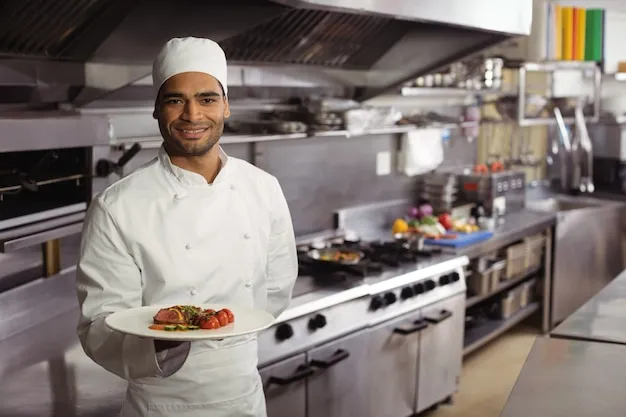
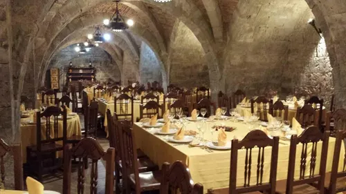

José Manuel García Sánchez es un chef especializado en cocina española. Con un profundo conocimiento de la gastronomía de España, José Manuel domina técnicas tradicionales y modernas para crear platos auténticos y creativos. Apasionado por los ingredientes frescos y locales, busca resaltar los sabores y texturas originales en cada preparación. Expertise en maridajes con vinos españoles. Ofrece experiencias culinarias memorables, manteniendo el respeto por la autenticidad de los platos españoles.

Bar Paquiña es un emblemático bar fundado en 1947 en pleno centro de Madrid. Desde sus inicios, ha sido reconocido por su ambiente acogedor y su oferta gastronómica de alta calidad, centrada en la cocina tradicional española. En 1995, el reconocido chef José Manuel García Sánchez se unió al equipo de Bar Paquiña, aportando su experiencia y pasión por la cocina española.
Bajo la dirección culinaria de José Manuel, Bar Paquiña se ha destacado por ofrecer platos auténticos y deliciosos que reflejan la rica tradición culinaria de España. Su habilidad para combinar técnicas tradicionales con un toque moderno ha llevado a Bar Paquiña a convertirse en un destino gastronómico popular tanto entre locales como turistas.
Con el tiempo, el bar ha mantenido su compromiso con la calidad y la frescura de los ingredientes, utilizando productos locales y de temporada siempre que es posible. Además de su exquisita comida, Bar Paquiña es conocido por su extensa selección de vinos españoles, cuidadosamente seleccionados para complementar cada plato.
Gracias a la visión y el talento culinario de José Manuel García Sánchez, Bar Paquiña continúa siendo un lugar de referencia en el panorama gastronómico madrileño, ofreciendo a sus clientes experiencias culinarias memorables que celebran la auténtica esencia de la cocina española.